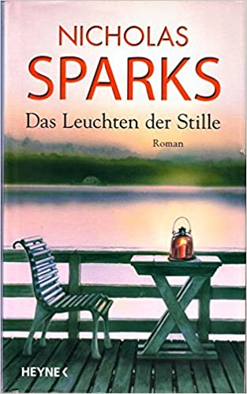

Willkommen in meiner "verfilmten Bücher" Bibliothek


Roman
- Hauptfiguren sind zwei Menschen oder StellvertreterInnen für Menschen: eine oder beide verlieben sich. Die Liebe ist mit Schwierigkeiten verbunden und verursacht Leiden. Eine der beiden Personen oder beide Personen kämpfen meist darum, eine stabile Beziehung oder Verbindung aufzubauen. Die Liebenden begegnen sich immer wieder oder haben immer wieder Kontakt. Es gibt eine spannende/interessante Rahmenhandlung.
-
Empfehlung: "Das Leuchten der Stille" Autor: Nicholas Sparks Beschreibung: Gibt es die ewige Liebe, die allen Widrigkeiten trotzt? John ist davon überzeugt. Nichts kann seine Beziehung zu Savannah gefährden, auch nicht der Umstand, dass er mehrere Jahre lang ins Ausland muss. Umso erschütterter ist er, als er ihren Abschiedsbrief empfängt – der ihn vor die schwerste Entscheidung seines Lebens stellt Film: "Das Leuchten der Stille"
- 
- Zurück